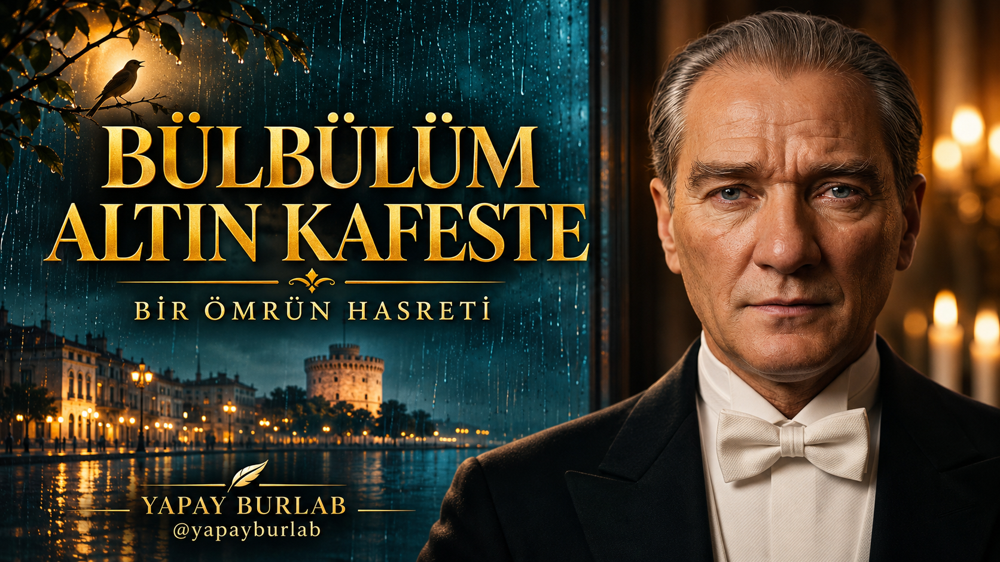

Rehber merkezine dön
TÜRKÜDEN SİNEMATİK KLİBE · 4 KASIM 2026
Bülbülüm Altın Kafeste
Bir Ömrün Hasreti — ses, görüntü ve kurgu yolculuğu.



Bu çalışma yapay zekâ destekli sanatsal bir canlandırmadır; gerçek bir Atatürk ses veya görüntü kaydı değildir.
Yapay BurLab | Yapım rehberi | 4 Kasım 2026
Bir müzik klibini güçlü yapan yalnız güzel kareler değil; sesin devamlılığı, birbirini tamamlayan sahneler ve doğru yerde yapılan kesmelerdir. Bu çalışmada hasret duygusunu salon, eski sokak, kıyı, ev ve mektup imgeleriyle anlattık.
Bu yapay zekâ destekli sanatsal bir canlandırmadır. Atatürk tasviri ve ses performansı gerçek bir Atatürk kaydı değildir. Anne ve ev imgeleri şiirsel hatıralardır; tarihî belge veya birebir rekonstrüksiyon olarak sunulmaz.
1. Önce sesi ve bitişi belirle
Kullanıcının seçtiği ses kaydını temel aldık. Son sürümde üzerine ikinci bir eşlik katmanı eklemek yerine kaydın kendi müzik-vokal dengesini koruduk. Sesin hızını veya perdesini değiştirmedik. Seçilen cümleleri birleştirip son sazın duyulmasına yer bıraktık: klip 73,3 saniye.
Kendi çalışmanda önce cümlenin ilk ve son hecesini dinle. Sözü ortadan kesme. Müzik kapanışını görüntü kararmadan önce aniden susturma. Ses referansın ve müziğin için kullanma haklarına sahip ol.
2. Bir hikâye ve tek bir görsel dil kur
Koyu teal gölgeler, sıcak ışık, yağmur ve doğal dokular aynı dünyanın parçalarıdır. Her planda aynı nesneyi tekrarlamak yerine başka bir anlam taşıyan görüntüye geç: ayrılık → sokak → kıyı → fotoğraf → anne hatırası → ev → mektup → kuş.
Yüz görsellerinde aynı portreyi referans ver; yüz, yaş, saç ve kıyafeti sabitle. Tarihî atmosferi gerçek olay iddiasıyla karıştırma.
3. Görselleri hareketlendir
Flow'da görselden videoya çalışırken seçtiğin resmi başlangıç referansı olarak ekle. Tek çekimde tek küçük hareket iste. Bu klibin son revizyonunda eski sokak, kayık, mektup ve çakıl kıyı olmak üzere dört yeni ara plan ayrıca metinden videoya üretildi.
Bu dört yeni planda Flow arayüzündeki Omni 1.1 Flash, 9:16, 720p ve 8 saniye ayarları kullanıldı. Araç seçenekleri değişirse hesabındaki güncel ad ve fiyatı kontrol et. Her çıktıyı indirip baştan sona izle; model seçimi kusursuz görüntü garantisi değildir.
4. Yüzü kısa ve doğru yerde kullan
OpenArt'ta şarkının kullanılacak bölümünü ve aynı yüz referansını yükle. Önce kısa bir deneme yap. Bu klipte mevcut Kling ve Aurora yüz kliplerinden kısa bölümler seçildi; son revizyonda yeni OpenArt üretimi yapılmadı.
Üretilen videonun sesini ana müziğin üstüne tekrar bindirme. Ağız zamanını aynı ses kesitiyle hizala. Türkçe heceleri gözle ve kulakla kontrol et. Prompt tek başına doğru dudak hareketini garanti etmez. Uyuşmayan bölümü uzatmak yerine anlamlı ara görüntüyle karşıla.
5. Kurgu akışı
0–5,4 saniye: kısa yüz → saz ayrıntısı → kısa yüz dönüşü.
5,4–25,6 saniye: hasret imgesi → eski sokak → kayık.
25,6–47,8 saniye: fotoğraf → anne hatırası → ev.
47,8–61,4 saniye: kısa söyleyiş → vapur → mektup → kısa söyleyiş.
61,4–73,3 saniye: kıyı → kuş ve müzik kapanışı.
Yüz bölümleri toplam 5,6 saniyedir. Geri kalan süre hikâye görüntüleridir. Klipleri ters oynatmadık ve döngüye sokmadık. Yüzlerde temiz kesmeler, bazı ara planlarda kısa yumuşak geçişler kullandık. Senin şarkında kesme yerlerini cümleye ve saz vuruşuna göre yeniden seç.
6. Son kontrol
Kayık planındaki kadraj kenarına giren yapay ekipman benzeri nesneyi temiz bir yakın kadrajla dışarıda bıraktık. Kontrol ederken el ve yüz biçimlerini, mimariyi, hareket yönünü, beliren nesneleri, ses tekrarlarını ve kesilen heceleri ayrı ayrı izle. Ses kaynağıyla aynı zaman kodu tek başına doğru ağız senkronu demek değildir.
Teslim edilen klip 720×1280, 30 kare/saniye ve 73,3 saniyedir. Dosya çözümleme kontrolü geçti; dışa aktarılan sesin ana miksle uyumu ölçüldü. Bu teknik kontroller öznel dinlemenin veya hece kontrolünün yerine geçmez.
Kopyalanabilir örnek promptlar
Aşağıdakiler rehber için düzenlenmiş, kendi projen için uyarlanabilir örneklerdir; bütün geçmiş üretimlere kelimesi kelimesine girilen komutların dökümü değildir. Başarılı sonuç sözü vermez. Önce tek aday üret, incele, sonra devam et.
Yüz referansı / görsel
Create one vertical 9:16 photorealistic cinematic still for a fictional historical Turkish folk music video. Mustafa Kemal Atatürk, using the supplied portrait reference for recognizable facial identity, seated upright in a dark burgundy velvet armchair in a restrained 1930s-inspired music salon at night. Medium close shot, nearly frontal, whole mouth visible, relaxed lips. Black dinner jacket, white shirt, bow tie matching the reference. Warm electric lamp on camera left, cool rain-streaked wooden window on camera right. Natural age lines, restrained emotion. No text, watermark, tears, plastic skin or hands near the face.
Eski sokak / hareket
Vertical 9:16 cinematic historical memory, 8 seconds. A quiet old Rumelian residential lane, damp cobblestones, modest plaster houses and a lace curtain in one window. One gentle forward camera drift. Stable architecture, soft overcast daylight. No people appearing, modern vehicles, changing doors, text or logos. Natural restrained realism. No generated dialogue or music.
Kayık / hareket
Vertical 9:16 realistic cinematic shot, 8 seconds. One small wooden boat securely moored beside an old stone quay at dawn. Gentle water ripples and very slight natural bobbing; the boat does not travel. Camera remains fixed, unobstructed frame. No tripod, camera equipment, people, extra boats, text or logos. Muted cool shadows and warm light. No generated speech or music.
Mektup / hareket
Vertical 9:16 cinematic close detail, 8 seconds. An unopened aged cream envelope on a dark wooden writing table beside a rainy window. No legible writing. A soft shifting window reflection across the table, almost locked camera, one subtle slow push. Envelope stays rigid and still. No hands, floating objects, magical dust, morphing, text or logos. No dialogue or music.
Kıyı / hareket
Vertical 9:16 photorealistic cinematic detail, 8 seconds. Small rounded pebbles on a quiet shoreline after rain. A single shallow wave washes gently across them and naturally recedes. Camera locked, stones remain fixed, real water physics, subdued warm horizon reflections. No people, birds appearing, time reversal, equipment, text or logos. No generated dialogue or music.
Ağız senkronu / kısa deneme
Use the supplied singing audio as the timing source. Preserve the reference identity, wardrobe, framing and lighting. Nearly frontal face, entire mouth visible, camera fixed, subtle breathing and restrained expression. No new words, extra voice, exaggerated jaw movement, face transformation or head turn. Do not change the audio tempo. Produce a short test before a longer generation.
Yayın ve marka
Başlıkta şarkının adını açık yaz. Kapakta az sözcük, okunabilir yazı ve Yapay BurLab imzası kullan. Gerçekçi sentetik içerik beyanını platformun ilgili ayarında aç; açıklamada sanatsal canlandırma olduğunu belirt. Bu bir arşiv kaydı değildir.
Yeni klipler ve yapım rehberleri: @yapayburlab
Yapay Zekânın Gücü, Üretimin Geleceği!
İş birliği: yapayburlab@hotmail.com